INDIAN PREMIER LEAGUE
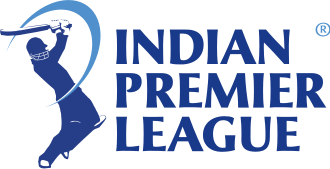 MATCHES VIDEOS STATS POINTS TABLE TEAMS NEWS DREAM 11
 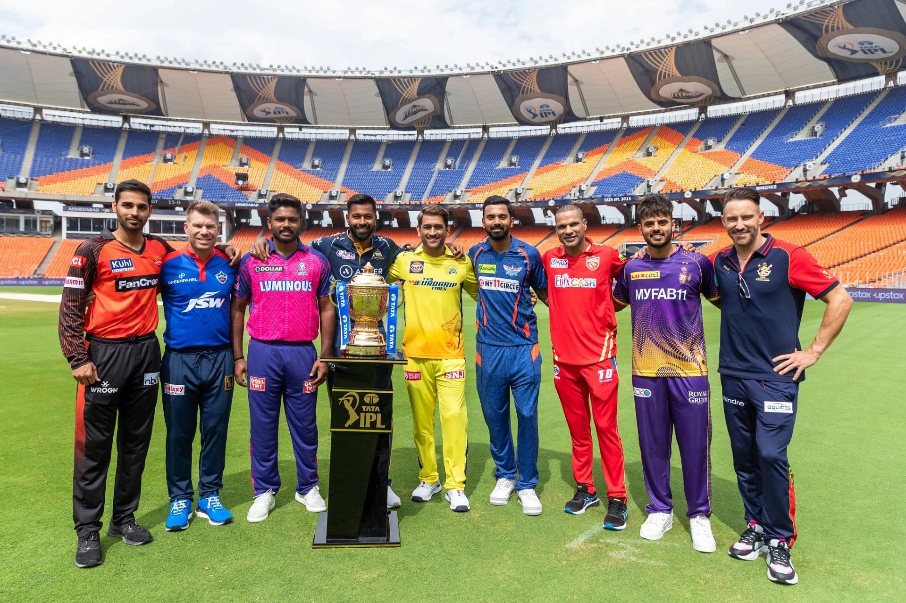
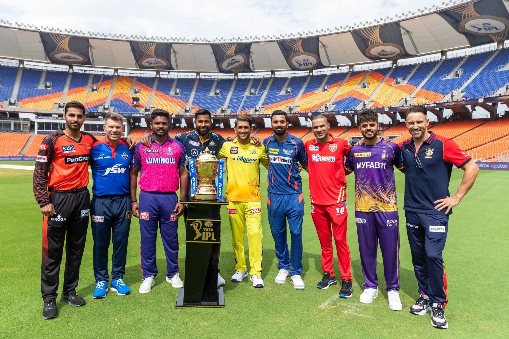
IPL 2024 SCHEDULE: CSK Vs RCB CLASH TO KICK OF
IPL schedule only for the first 21 matches, 17 days has been revealed. The roster for the other games will be decided after the Lok Sabha elections dates are announced.
"As in the past, the BCCI will work closely with government and security agencies, following all necessary protocols and advisories related to the upcoming Lok Sabha Elections in India. Once the dates for the 18th Lok Sabha elections are announced, the Board will review and address any issues pertaining to the schedule of the first two weeks. Subsequently, the BCCI will work in tandem with local authorities to finalize the schedule for the remainder of the season, taking into account the polling .
TEAM-WISE SCHEDULE OF ALL IPL TEAMS
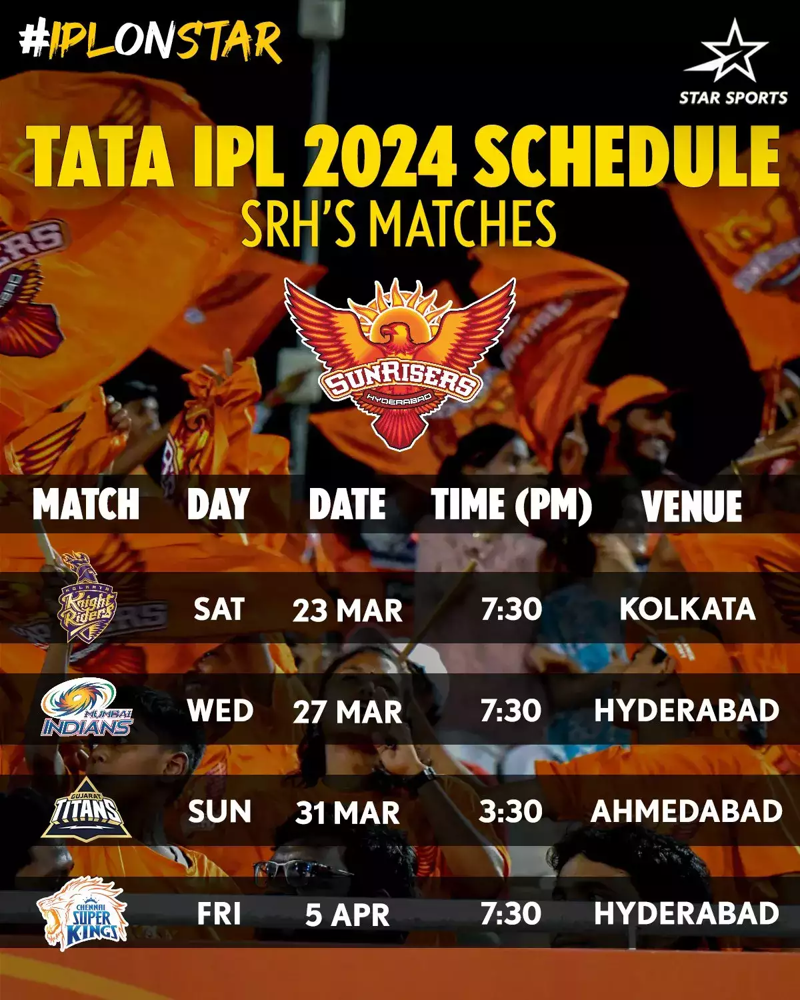 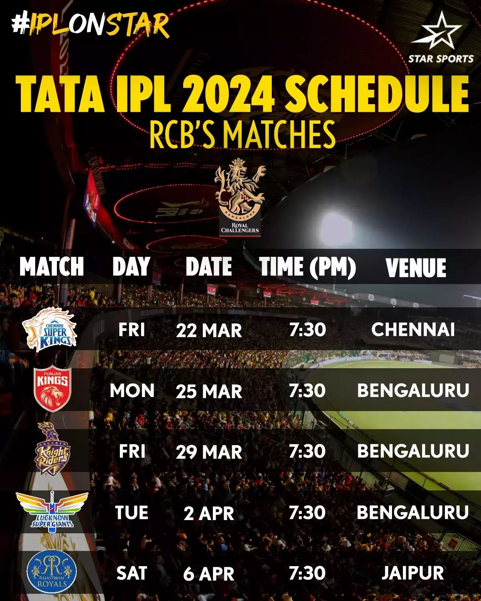 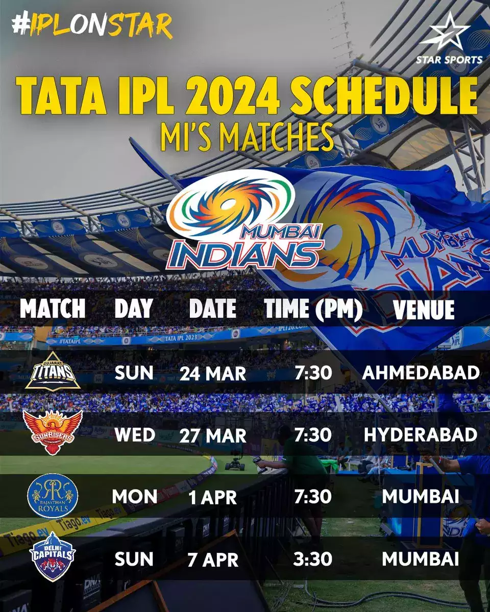
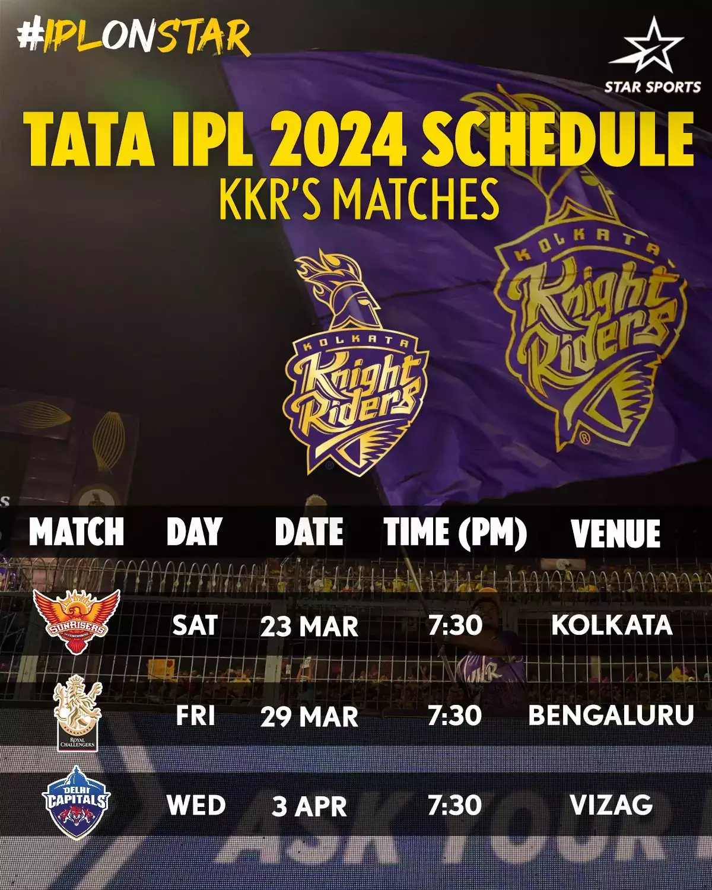 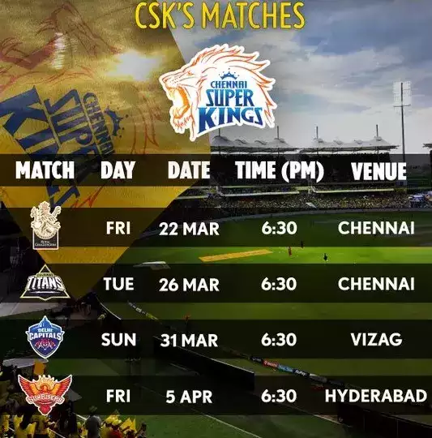 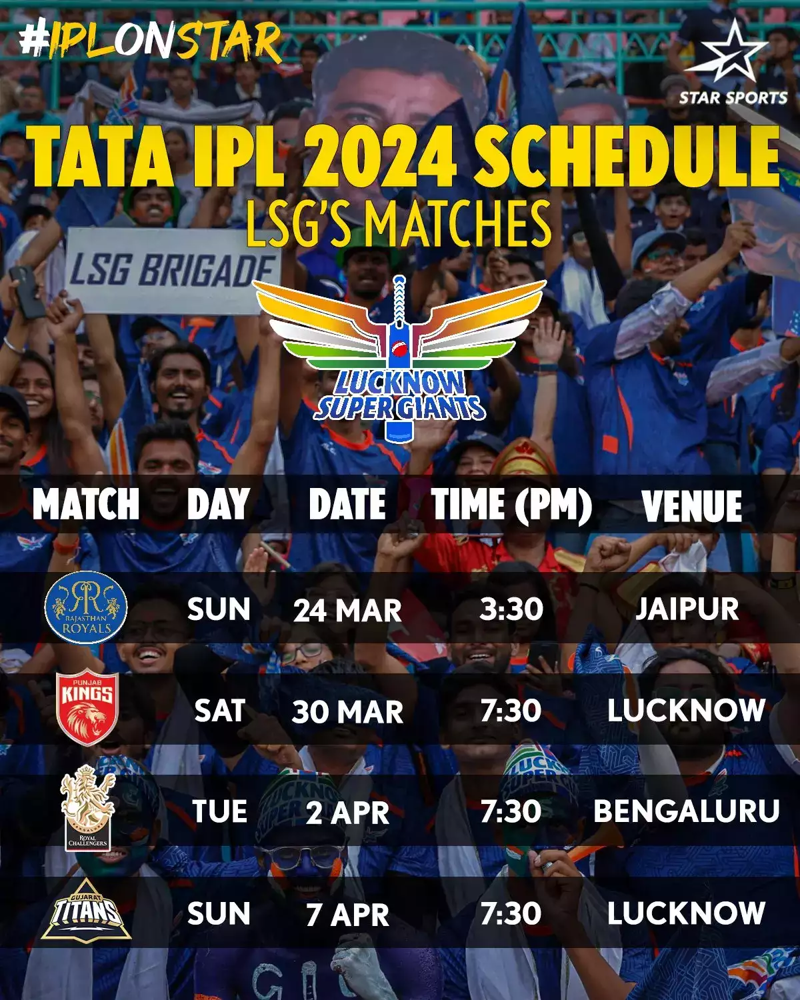
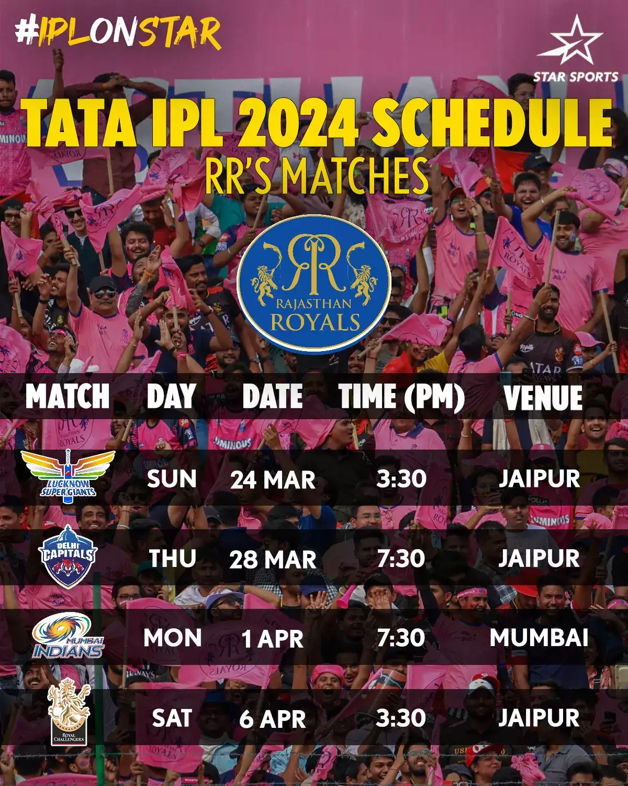 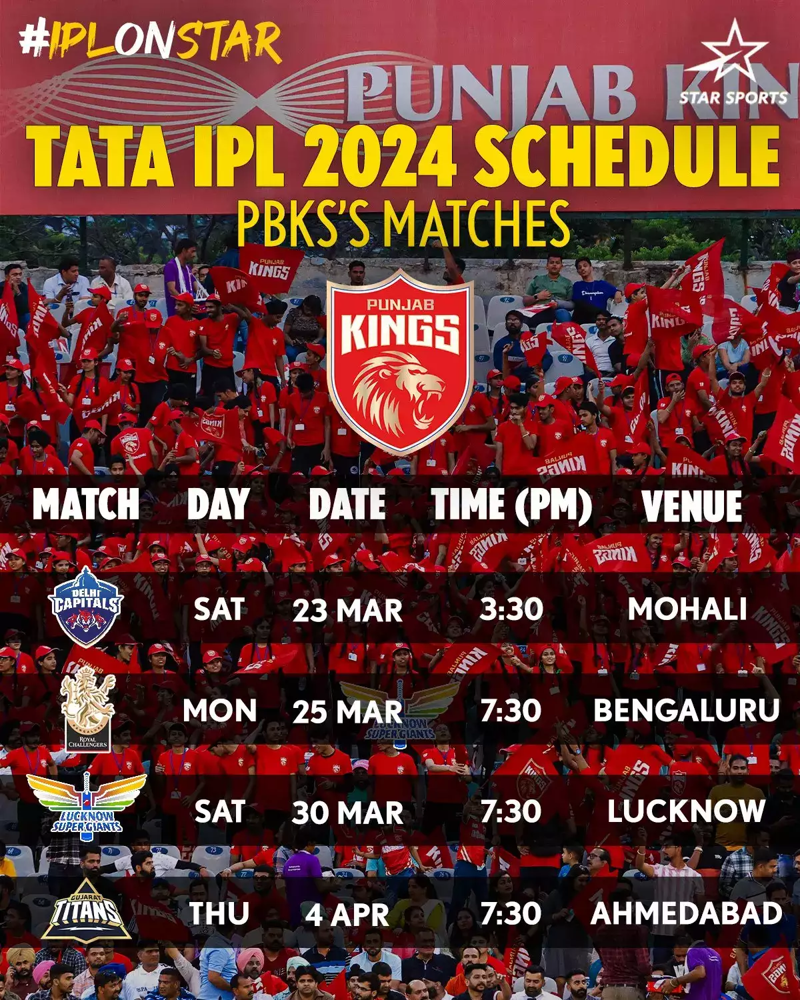 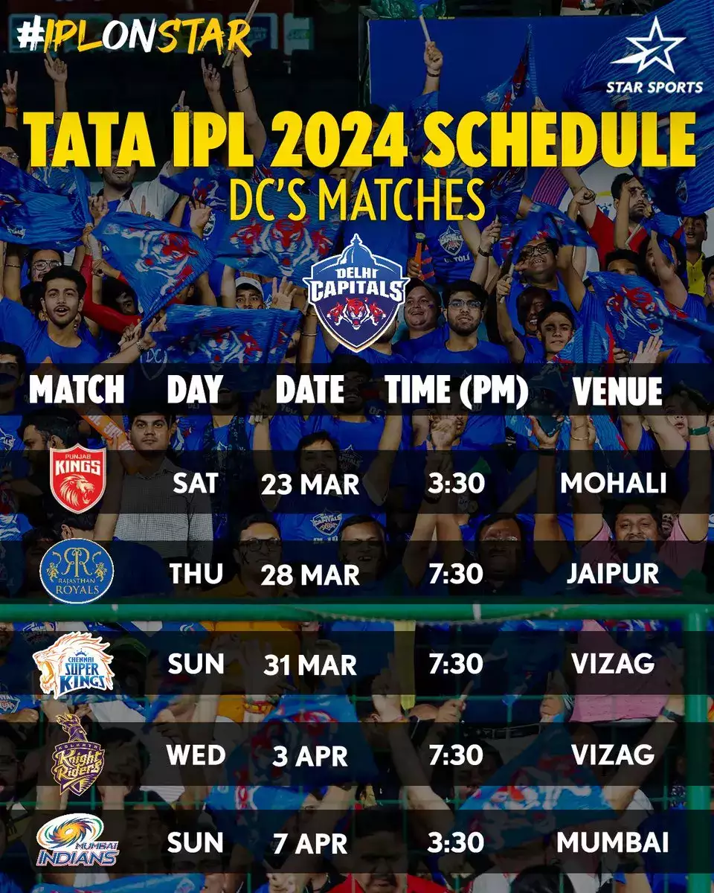
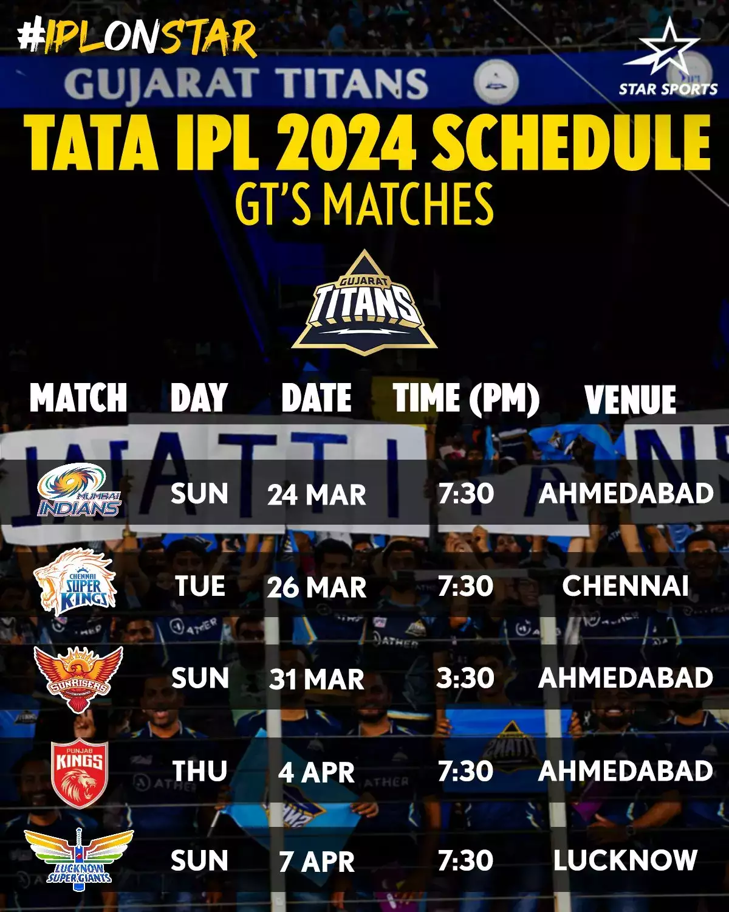
Interesting contests to watch in IPL 2024......
Does mangoes taste sweet again ???
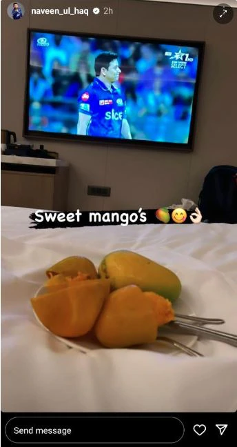
Gautam Gambhir's Test-like field setting for MS Dhoni ??? will he repeat it again as coach with kkr?

Another trophy in india for this duo?(Sunrisers Hyderabad)
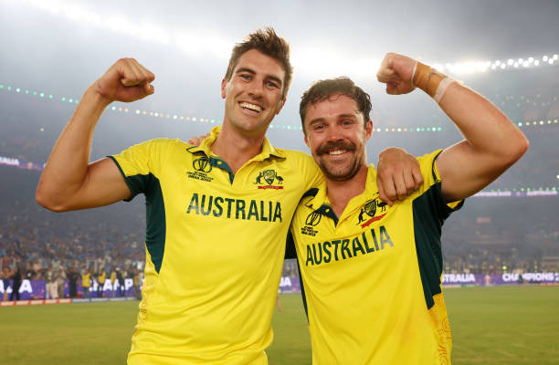